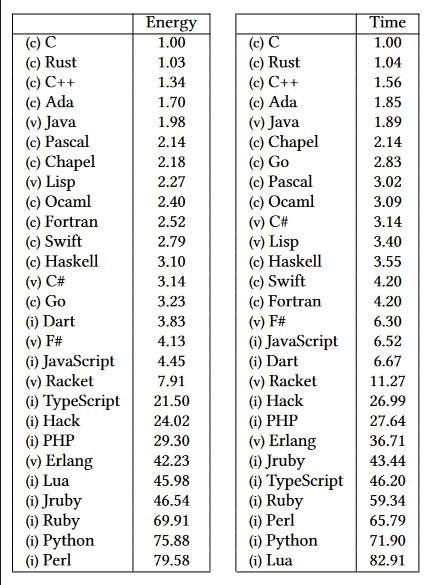

<!DOCTYPE html>
<html lang="en">
  <head>
    <meta charset="utf-8" />
    <meta name="viewport" content="width=device-width, initial-scale=1.0, maximum-scale=1.0, user-scalable=no" />

    <title></title>
    <link rel="stylesheet" href="dist/reveal.css" />
    <link rel="stylesheet" href="dist/theme/night.css" id="theme" />
    <link rel="stylesheet" href="css/vs2015.css" />
	<link rel="stylesheet" href="css/layout.css" />
	<link rel="stylesheet" href="plugin/customcontrols/style.css">


    <script defer src="dist/fontawesome/all.min.js"></script>

	<script type="text/javascript">
		var forgetPop = true;
		function onPopState(event) {
			if(forgetPop){
				forgetPop = false;
			} else {
				parent.postMessage(event.target.location.href, "app://obsidian.md");
			}
        }
		window.onpopstate = onPopState;
		window.onmessage = event => {
			if(event.data == "reload"){
				window.document.location.reload();
			}
			forgetPop = true;
		}

		function fitElements(){
			const itemsToFit = document.getElementsByClassName('fitText');
			for (const item in itemsToFit) {
				if (Object.hasOwnProperty.call(itemsToFit, item)) {
					var element = itemsToFit[item];
					fitElement(element,1, 1000);
					element.classList.remove('fitText');
				}
			}
		}

		function fitElement(element, start, end){

			let size = (end + start) / 2;
			element.style.fontSize = `${size}px`;

			if(Math.abs(start - end) < 1){
				while(element.scrollHeight > element.offsetHeight){
					size--;
					element.style.fontSize = `${size}px`;
				}
				return;
			}

			if(element.scrollHeight > element.offsetHeight){
				fitElement(element, start, size);
			} else {
				fitElement(element, size, end);
			}		
		}


		document.onreadystatechange = () => {
			fitElements();
			if (document.readyState === 'complete') {
				if (window.location.href.indexOf("?export") != -1){
					parent.postMessage(event.target.location.href, "app://obsidian.md");
				}
				if (window.location.href.indexOf("print-pdf") != -1){
					let stateCheck = setInterval(() => {
						clearInterval(stateCheck);
						window.print();
					}, 250);
				}
			}
	};


        </script>
  </head>
  <body>
    <div class="reveal">
      <div class="slides"><section  data-markdown><script type="text/template"><!-- .slide: class="drop" -->
<div class="" style="position: absolute; left: 0px; top: 0px; height: 700px; width: 960px; min-height: 700px; display: flex; flex-direction: column; align-items: center; justify-content: center" absolute="true">

<style>
:root {--r-code-font: "FiraCode Nerd Font";}
.reveal .hljs {min-height: 50%;}

.reveal code.rust.small {
  font-size: 0.75em;
  line-height: 1.5em;
}


</style>

## Unveiling the Power of Rust


notes:
Welcome my name is Ryan, I am based in Pretoria and the tech stack that I work on at BBD is python and C# based. But If you had to look at my personal GitHub all you would see it overflowing with Rust code. The main reason for this is because over the last 2-3 years I have been exposed to benefits of rust in the real world as well as a lot of the more theoretical benefits from the conferences that I have attended. So today I will be sharing my passion of rust with you and hopefully convincing you as a developer or even as a team to consider Rust for your next project
</div></script></section><section  data-markdown><script type="text/template"><!-- .slide: class="drop" -->
<div class="" style="position: absolute; left: 0px; top: 0px; height: 700px; width: 960px; min-height: 700px; display: flex; flex-direction: column; align-items: center; justify-content: center" absolute="true">

# Rust

Rust is a statically typed, low level, multi-paradigm programming language.

notes:
Now I mean I could just rattle of this dictionary definition but I am sure that we can all google that and I would have already lost half of you guys by the statically typed. 
So what am I actual going to speak about?

1 Errors
2 where we can use it 
3 Cost related 

This was the original:
Rust is a statically typed, low level, multi-paradigm systems programming language renowned for its performance, memory safety, fearless concurrency, zero-cost abstractions, pattern matching, compiler-enforced ownership model, macro expansion, lifetimes, and trait system.
</div></script></section><section  data-markdown><script type="text/template"><!-- .slide: class="drop" -->
<div class="" style="position: absolute; left: 0px; top: 0px; height: 700px; width: 960px; min-height: 700px; display: flex; flex-direction: column; align-items: center; justify-content: center" absolute="true">

# Safety

notes: 
So I am not going to go into memory safety and how Rust achieves this without a garbage collector but rather how the compiler forces you to make better decisions and prevents you from poor error handling.
</div></script></section><section  data-markdown><script type="text/template"><!-- .slide: class="drop" -->
<div class="" style="position: absolute; left: 0px; top: 0px; height: 700px; width: 960px; min-height: 700px; display: flex; flex-direction: column; align-items: center; justify-content: center" absolute="true">

I'm TIRED of errors like this: 
- `json decoding error on line 1`
- `"unexpected ; in query"`
- `NullPointerException` (or `NoneType has no atribute`)
- `TypeError: "x" is not a function`

notes:

Now I am sure that we have all been in this situation:
Trawling through thousands and thousands of log lines just to find one of these abysmal errors.   
Lets have a look at a simple example showing some code
</div></script></section><section  data-markdown><script type="text/template"><!-- .slide: class="drop" -->
<div class="" style="position: absolute; left: 0px; top: 0px; height: 700px; width: 960px; min-height: 700px; display: flex; flex-direction: column; align-items: center; justify-content: center" absolute="true">

## Python Example

```Python 
account = get_account_detail_from_server("username")  # Make request to api etc.  
card = account["card1"]  
balance = card["bal"]  
bal_value = float(balance)
```


notes: 

Now I am sure that as developers we are all familiar with this situation. We make an API call, we get some data from it and we extract the data we want and then we can do some processing on it. 

Now this code works perfectly right?
OOF it is 4:00 AM 
Production is down 
15 missed calls from the boss 
Looks like I am going to need brush up my CV
</div></script></section><section  data-markdown><script type="text/template"><!-- .slide: class="drop" -->
<div class="" style="position: absolute; left: 0px; top: 0px; height: 700px; width: 960px; min-height: 700px; display: flex; flex-direction: column; align-items: center; justify-content: center" absolute="true">

## Well lets rewind a bit and dissect the issues this code.
</div></script></section><section  data-markdown><script type="text/template"><!-- .slide: class="drop" -->
<div class="" style="position: absolute; left: 0px; top: 0px; height: 700px; width: 960px; min-height: 700px; display: flex; flex-direction: column; align-items: center; justify-content: center" absolute="true">

#### Unsafe Assumptions 

```Python[1|2|3|4]
account = get_account_detail_from_server("username")  # Make request to api etc.  
card = account["card1"]  
balance = card["bal"]  
bal_value = float(balance)
```

notes: 
The main issue is unsafe assumptions
Further more these will only be caught at runtime.
1. assume that the get_account_detail_from_server is successful
2. the structure of the object returned is the same as the last time we used it
3. meaning it has card1
4. card1 has a bal 
5. and that bal can be converted to a float
So lets look at a rust conversion of this
</div></script></section><section  data-markdown><script type="text/template"><!-- .slide: class="drop" -->
<div class="" style="position: absolute; left: 0px; top: 0px; height: 700px; width: 960px; min-height: 700px; display: flex; flex-direction: column; align-items: center; justify-content: center" absolute="true">

### Bad Rust Conversion
```rust
f64::from_str(
    get_account_detail_from_server("username").unwrap()
	    .get("card1").unwrap()
        .get("bal").unwrap()
).unwrap()
```
Note the usage of `unwrap()`

notes:

This rust version it is just as unsafe. 
Well at least the 4 places where it can crash are explicitly stated. 
The only thing that we can see from this is that rust makes it explicit when we are introducing a crash.
Now if we want our app to never crash we need to use alternatives for the unwrap's. So what are these alternatives.
</div></script></section><section  data-markdown><script type="text/template"><!-- .slide: class="drop" -->
<div class="" style="position: absolute; left: 0px; top: 0px; height: 700px; width: 960px; min-height: 700px; display: flex; flex-direction: column; align-items: center; justify-content: center" absolute="true">

#### A verbose rust solution

```rust small[]
if let Some(account) = get_account_detail_from_server("username") {  
    match account.get("card1") {  
        Some(card) => {  
            match card.get("bal") {  
                Some(balance) => {  
                    match f64::from_str(balance) {  
                        Ok(balance) => balance,  
                        Err(_) => { /*Unable to parse balance*/ }  
                    }  
                },  
                None => { /*bal value not found in object*/ }  
            }  
        },
        None => { /*card1 is not found in object*/ }  
    }  
} else { /*Unable to get account details from server*/ }
```

notes: 

Here is a verbose version.
Now this is quite frankly difficult to read. 
Yet one thing is made abundantly clear Rust will not allow you write unsafe code from the start.
You must handle all errors.
</div></script></section><section  data-markdown><script type="text/template"><!-- .slide: class="drop" -->
<div class="" style="position: absolute; left: 0px; top: 0px; height: 700px; width: 960px; min-height: 700px; display: flex; flex-direction: column; align-items: center; justify-content: center" absolute="true">

#### More idiomatic rust code

```rust
let account_response = get_account_detail_from_server("username")?;  
let card = account_response.get("card1").ok()?;  
let bal = card.get("bal").ok()?;  
let bal_value = f64::from_str(bal)?;
```

notes: 

Now this is what I am talking about this idiomatic solution keeps us on the 'happy path' and allows the error to be propagated upwards. this is done via the  the `?` (try operator) and will causing the function to return an error immediately if it occurs .
</div></script></section><section  data-markdown><script type="text/template"><!-- .slide: class="drop" -->
<div class="" style="position: absolute; left: 0px; top: 0px; height: 700px; width: 960px; min-height: 700px; display: flex; flex-direction: column; align-items: center; justify-content: center" absolute="true">

## So Where Can We Use Rust
Everywhere Of Course

notes:

From bare-metal chips, through backend code, AWS lambdas, and frontend and mobile and app development
</div></script></section><section  data-markdown><script type="text/template"><!-- .slide: class="drop" -->
<div class="" style="position: absolute; left: 0px; top: 0px; height: 700px; width: 960px; min-height: 700px; display: flex; flex-direction: column; align-items: center; justify-content: center" absolute="true">

|                |                                                            |
|----------------|------------------------------------------------------------|
| Web Frontend   | Sycamore(Wasm)                                             |
| Web Backend    | Axum                                                       |
| Games          | Bevy                                                       |
| Mobile/Desktop | Tauri                                                      |
| Sql            | SqlX(PostgreSQL, MySQL, MariaDB, SQLite)                   |
| Graphics       | Wgpu(Vulkan, Metal, DirectX 12, OpenGL ES, WebGPU, WebGL2) |

notes:
</div></script></section><section  data-markdown><script type="text/template"><!-- .slide: class="drop" -->
<div class="" style="position: absolute; left: 0px; top: 0px; height: 700px; width: 960px; min-height: 700px; display: flex; flex-direction: column; align-items: center; justify-content: center" absolute="true">

|                 |                             |
|-----------------|-----------------------------|
| AWS, Azure, GCP | First class support         |
| Linux           | Used In Kernel              |
| Windows         | Security critical processes |

notes:

First-class support on AWS, Azure, GCP
Rust became the third officially supported language the others being assembly and C, No CPP support
Windows has even started rewriting some of their Security critical processes in rust, guess the rewrite in rust meme is there for a reason.
</div></script></section><section  data-markdown><script type="text/template"><!-- .slide: class="drop" -->
<div class="" style="position: absolute; left: 0px; top: 0px; height: 700px; width: 960px; min-height: 700px; display: flex; flex-direction: column; align-items: center; justify-content: center" absolute="true">

# Why Use Rust

notes:

Now that we have seen a bit about error handling and where we can use it lets look a bit at the developer experience.
</div></script></section><section  data-markdown><script type="text/template"><!-- .slide: class="drop" -->
<div class="" style="position: absolute; left: 0px; top: 0px; height: 700px; width: 960px; min-height: 700px; display: flex; flex-direction: column; align-items: center; justify-content: center" absolute="true">

## Similar syntax 

```rust
println!("Hello world");
```

notes:

Rust has the familiar c-like syntax that will be super easy to pick up as java, go, javascript or even python developer.
</div></script></section><section  data-markdown><script type="text/template"><!-- .slide: class="drop" -->
<div class="" style="position: absolute; left: 0px; top: 0px; height: 700px; width: 960px; min-height: 700px; display: flex; flex-direction: column; align-items: center; justify-content: center" absolute="true">

## Expressive Thinking

```rust
// statement:
let mut output; 
if option { 
    output = thing1;
} else {
    output = thing2;
}
// expression:
output = if option { thing1 } else { thing2 };
```

notes: 

Semicolons finally have proper MEANING, so when we do not include the ; it is the same as stating return x; .
Helps to reduce the usage of mutability
</div></script></section><section  data-markdown><script type="text/template"><!-- .slide: class="drop" -->
<div class="" style="position: absolute; left: 0px; top: 0px; height: 700px; width: 960px; min-height: 700px; display: flex; flex-direction: column; align-items: center; justify-content: center" absolute="true">

## No trade off between ergonomics and speed 

```rust
let product_of_cubes: u32 = (1..3)
    .map(|x| x.pow(3))
    .product();
```

notes:

In Rust  we can have our cake and eat it as there is no need to chose between high level features and low level speed. 

Here I have a functional-style iterator but this is just one of many zero-cost abstractions. Cool what exactly is a zero-cost abstraction you may ask. Well in essence it means that you code will get compiled down to simple loops that are easy for the CPU to understand.
</div></script></section><section  data-markdown><script type="text/template"><!-- .slide: class="drop" -->
<div class="" style="position: absolute; left: 0px; top: 0px; height: 700px; width: 960px; min-height: 700px; display: flex; flex-direction: column; align-items: center; justify-content: center" absolute="true">

## Nulls no more

```rust
let possibly_a_number = Some(1);

possibly_a_number
    .map(|n| n + 1)
    .unwrap_or(0);
```

notes:

Optional's replace nulls in rust.
All iterator functions can be used on optional's.
</div></script></section><section  data-markdown><script type="text/template"><!-- .slide: class="drop" -->
<div class="" style="position: absolute; left: 0px; top: 0px; height: 700px; width: 960px; min-height: 700px; display: flex; flex-direction: column; align-items: center; justify-content: center" absolute="true">

### Enums Make Invalid States Impossible 

```rust
enum Condition { Healthy, Recovery, Sick }
enum Breed { Labrador, Poodle, GermanShepherd, Bulldog, Husky }
struct Dog { name: String, condition: Condition, breed: Breed }
```
```rust
let dog = Dog {
    name: "Buddy",
    condition: Condition::Sick,
    breed: Breed::Husky
}
```
</div></script></section><section  data-markdown><script type="text/template"><!-- .slide: class="drop" -->
<div class="" style="position: absolute; left: 0px; top: 0px; height: 700px; width: 960px; min-height: 700px; display: flex; flex-direction: column; align-items: center; justify-content: center" absolute="true">

## Complex Macro System

``` html[]
let page = html! {
  <html>
  <head>
	  <title>"My blog"</title>
  </head>
  <body>
	  <div id="my_div"></div>
  </body>
  </html>
};
```


<https://crates.io/crates/html-to-string-macro>

notes:

Would you like to write html inside your rust code? Of course you would, and you get syntax highlighting and compile checking for FREE.

Imagine being able to bring the power of rust to other programming languages. Wait we can introducing compile time macros. These provide rust with yet another super power. In this example we are able to compile time check our html to see if there are errors in it., check out YEW if you want to get more info on this.
</div></script></section><section  data-markdown><script type="text/template"><!-- .slide: class="drop" -->
<div class="" style="position: absolute; left: 0px; top: 0px; height: 700px; width: 960px; min-height: 700px; display: flex; flex-direction: column; align-items: center; justify-content: center" absolute="true">

### Compile-time Evaluation

```rust[]
let account = sqlx::query!("SELECT name, id FROM account")
    .fetch_one(&mut pool)
    .await?;
```
<https://crates.io/crates/sqlx>

notes:

We can use the macro, `sqlx::query!` to achieve compile-time syntactic and semantic verification of the SQL, with an output to an anonymous record type where each SQL column is a Rust field (using raw identifiers where needed).
</div></script></section><section  data-markdown><script type="text/template"><!-- .slide: class="drop" -->
<div class="" style="position: absolute; left: 0px; top: 0px; height: 700px; width: 960px; min-height: 700px; display: flex; flex-direction: column; align-items: center; justify-content: center" absolute="true">

### Performance, Portability, Profit 

So we all know time is money. 

notes: 

But speed should not be the only metric we look at.
</div></script></section><section  data-markdown><script type="text/template"><!-- .slide: class="drop" -->
<div class="" style="position: absolute; left: 0px; top: 0px; height: 700px; width: 960px; min-height: 700px; display: flex; flex-direction: column; align-items: center; justify-content: center" absolute="true">




notes:
So in this table we have a comparison between various programming languages, the relative time that it run a program as well as the amount of energy that.
So this is a bit complex lets look at at a bit more condensed version 

https://greenlab.di.uminho.pt/wp-content/uploads/2017/10/sleFinal.pdf
</div></script></section><section  data-markdown><script type="text/template"><!-- .slide: class="drop" -->
<div class="" style="position: absolute; left: 0px; top: 0px; height: 700px; width: 960px; min-height: 700px; display: flex; flex-direction: column; align-items: center; justify-content: center" absolute="true">

| Language | Time |
| -------- | ---- |
| C        | 1x   |
| Rust     | 1.1x |
| C++      | 1.4x |
| Java     | 2x   |
| C#       | 3x   |
| Js       | 6x   |
| Python   | 70x  |

notes: 

So all performance tests should be taken with a grain of salt.
But there is a vast difference between Python and Rust.
</div></script></section><section  data-markdown><script type="text/template"><!-- .slide: class="drop" -->
<div class="" style="position: absolute; left: 0px; top: 0px; height: 700px; width: 960px; min-height: 700px; display: flex; flex-direction: column; align-items: center; justify-content: center" absolute="true">

### Rust has many architectures as build targets

notes:
Why does this matter, mitigates the ideology of write once and run anywhere.
</div></script></section><section  data-markdown><script type="text/template"><!-- .slide: class="drop" -->
<div class="" style="position: absolute; left: 0px; top: 0px; height: 700px; width: 960px; min-height: 700px; display: flex; flex-direction: column; align-items: center; justify-content: center" absolute="true">

## ARM Lambdas Cost 

| x64 price/ms   | ARM price/ms   |
|----------------|----------------|
| \$0.0000000021 | \$0.0000000017 |

https://aws.amazon.com/lambda/pricing/

(eu-west-2, price for 128MB)
</div></script></section><section  data-markdown><script type="text/template"><!-- .slide: class="drop" -->
<div class="" style="position: absolute; left: 0px; top: 0px; height: 700px; width: 960px; min-height: 700px; display: flex; flex-direction: column; align-items: center; justify-content: center" absolute="true">

### Summary

notes:
In summary we have can see that Rust is not only faster, allows ergonomic code, proper errors, cheaper and more environmentally friendly. Ok Hopefully I have sold you so:
</div></script></section><section  data-markdown><script type="text/template"><!-- .slide: class="drop" -->
<div class="" style="position: absolute; left: 0px; top: 0px; height: 700px; width: 960px; min-height: 700px; display: flex; flex-direction: column; align-items: center; justify-content: center" absolute="true">

###  Sold
#### So where to start?

1. [The Rust Programming language book](https://doc.rust-lang.org/stable/book/)
2. [Rust By Example](https://doc.rust-lang.org/stable/rust-by-example/)
3. [Rustlings](https://github.com/rust-lang/rustlings)

notes:
So hopefully I have convinced you, Now you may be asking where do I start

1st. Core
2nd is Supplementary 
3rd Interactive examples
</div></script></section><section  data-markdown><script type="text/template"><!-- .slide: class="drop" -->
<div class="" style="position: absolute; left: 0px; top: 0px; height: 700px; width: 960px; min-height: 700px; display: flex; flex-direction: column; align-items: center; justify-content: center" absolute="true">

### Questions


```html
Slides:
https://ryan-blignaut-bbd.github.io/Rust-TechAway/#/
Markdown:
https://github.com/Ryan-Blignaut-BBD/Rust-TechAway
```
</div></script></section></div>
    </div>

    <script src="dist/reveal.js"></script>

    <script src="plugin/markdown/markdown.js"></script>
    <script src="plugin/highlight/highlight.js"></script>
    <script src="plugin/zoom/zoom.js"></script>
    <script src="plugin/notes/notes.js"></script>
    <script src="plugin/math/math.js"></script>
	<script src="plugin/mermaid/mermaid.js"></script>
	<script src="plugin/chart/chart.min.js"></script>
	<script src="plugin/chart/plugin.js"></script>
	<script src="plugin/customcontrols/plugin.js"></script>

    <script>
      function extend() {
        var target = {};
        for (var i = 0; i < arguments.length; i++) {
          var source = arguments[i];
          for (var key in source) {
            if (source.hasOwnProperty(key)) {
              target[key] = source[key];
            }
          }
        }
        return target;
      }

	  function isLight(color) {
		let hex = color.replace('#', '');

		// convert #fff => #ffffff
		if(hex.length == 3){
			hex = `${hex[0]}${hex[0]}${hex[1]}${hex[1]}${hex[2]}${hex[2]}`;
		}

		const c_r = parseInt(hex.substr(0, 2), 16);
		const c_g = parseInt(hex.substr(2, 2), 16);
		const c_b = parseInt(hex.substr(4, 2), 16);
		const brightness = ((c_r * 299) + (c_g * 587) + (c_b * 114)) / 1000;
		return brightness > 155;
	}

	var bgColor = getComputedStyle(document.documentElement).getPropertyValue('--r-background-color').trim();
	var isLight = isLight(bgColor);

	if(isLight){
		document.body.classList.add('has-light-background');
	} else {
		document.body.classList.add('has-dark-background');
	}

      // default options to init reveal.js
      var defaultOptions = {
        controls: true,
        progress: true,
        history: true,
        center: true,
        transition: 'default', // none/fade/slide/convex/concave/zoom
        plugins: [
          RevealMarkdown,
          RevealHighlight,
          RevealZoom,
          RevealNotes,
          RevealMath.MathJax3,
		  RevealMermaid,
		  RevealChart,
		  RevealCustomControls,
        ],


    	allottedTime: 120 * 1000,

		mathjax3: {
			mathjax: 'plugin/math/mathjax/tex-mml-chtml.js',
		},
		markdown: {
		  gfm: true,
		  mangle: true,
		  pedantic: false,
		  smartLists: false,
		  smartypants: false,
		},

		mermaid: {
			theme: isLight ? 'default' : 'dark',
		},

		customcontrols: {
			controls: [
			]
		},
      };

      // options from URL query string
      var queryOptions = Reveal().getQueryHash() || {};

      var options = extend(defaultOptions, {"width":960,"height":700,"margin":0.04,"controls":true,"progress":true,"slideNumber":false,"transition":"slide","transitionSpeed":"default"}, queryOptions);
    </script>

    <script>
      Reveal.initialize(options);
    </script>
  </body>

  <!-- created with Advanced Slides -->
</html>
